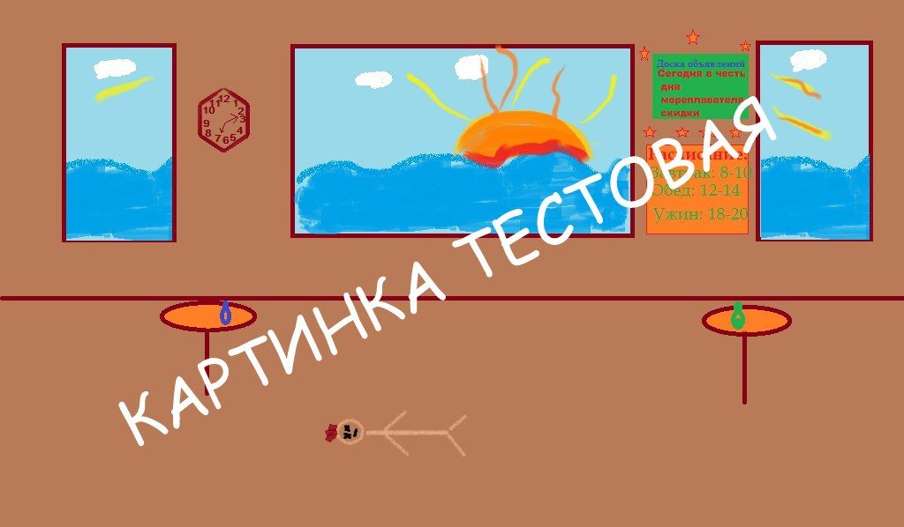

Были сопоставлены известные факты: Каждому известно, что яд есть у Боцмана. Также некоторые очевидцы утверждают, что яд есть у Леди, т.к. у нее близкие отношения с Боцманом. У Капитан есть сейф, в котором хранится пистолет. Ключи от сейфа есть только у него и Доктора. Также на корабле находится такая подозрительная личность как Шпион, который имеет доступ ко всем помещениям корабля и мог украсть или яд или пистолет.
После опроса свидетелей были установлены следующие факты:
«Всю неделю был шторм, и в день убийства тоже».
«Известно, что Капитан не покидает капитанского мостика во время шторм».
«Если Капитан находился в ресторане, то Боцман точно там не был».
«Шпион посещает ресторан, если там не нет Капитана или Боцмана».
«Если не было Шпиона и был Доктор, то Леди была во время убийства».
«Леди не была в ресторане во время убийства - Леди не убийца.»
«Боцман не был в ресторане во время убийства - Боцман не убийца.»
«Капитан не был в ресторане во время убийства - Капитан не убийца.»
«Доктор не был в ресторане во время убийства - Доктор не убийца.»
«Шпион не был в ресторане во время убийства - Шпион не убийца.»
«Жертва отравлена, то убийца Леди или Боцман или Шпион.»
«Жертва застрелена, то убийца Доктор или Капитан или Шпион.»
История
На трансатлантическом корабле “Королева Елизавета“, совершавшим свое путешествие в Новый Свет, произошло убийство одного из пассажиров. Кто же повинен в этом тяжком преступлении? Известно, что убийство произошло во время ужина в 18.00. Отчего погибла жертва точно неизвестно. Беглый осмотр не показал признаков отравления. У детектива есть пять подозреваемых: Леди, Боцман, Капитан, Доктор, Шпион. Кто же из них убийца? Очевидно, что кто-то из них должен был находиться во время ужина в ресторане. Задача детектива эта выяснить.Были сопоставлены известные факты: Каждому известно, что яд есть у Боцмана. Также некоторые очевидцы утверждают, что яд есть у Леди, т.к. у нее близкие отношения с Боцманом. У Капитан есть сейф, в котором хранится пистолет. Ключи от сейфа есть только у него и Доктора. Также на корабле находится такая подозрительная личность как Шпион, который имеет доступ ко всем помещениям корабля и мог украсть или яд или пистолет.
После опроса свидетелей были установлены следующие факты:
«Всю неделю был шторм, и в день убийства тоже».
«Известно, что Капитан не покидает капитанского мостика во время шторм».
«Если Капитан находился в ресторане, то Боцман точно там не был».
«Шпион посещает ресторан, если там не нет Капитана или Боцмана».
«Если не было Шпиона и был Доктор, то Леди была во время убийства».
«Леди не была в ресторане во время убийства - Леди не убийца.»
«Боцман не был в ресторане во время убийства - Боцман не убийца.»
«Капитан не был в ресторане во время убийства - Капитан не убийца.»
«Доктор не был в ресторане во время убийства - Доктор не убийца.»
«Шпион не был в ресторане во время убийства - Шпион не убийца.»
«Жертва отравлена, то убийца Леди или Боцман или Шпион.»
«Жертва застрелена, то убийца Доктор или Капитан или Шпион.»
убийца Леди
убийца Боцман
убийца Капитан
убийца Доктор
убийца Шпион
Леди была в ресторане во время убийства
Боцман был в ресторане во время убийства
Капитан был в ресторане во время убийства
Доктор был в ресторане во время убийства
Шпион был в ресторане во время убийства
жертва была отравлена
убийство произошло днем
во время убийства был штиль
Логические выражения
Окно доказательств